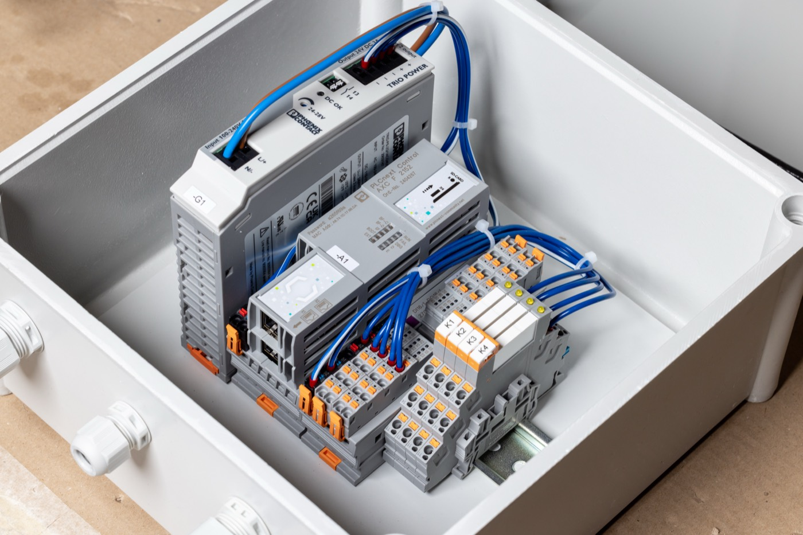

In het kort
- Bedrijf
- Pekso, prefab betonfabriek (onder meer breedplaatvloeren)
- Regio
- Noord-Brabant
- Netcontract
- Begrensde afname, 0 kW teruglevering
- Wat er staat
- 1.800 zonnepanelen, 660 kW omvormervermogen
320 PVT-panelen en twee warmtepompen
Batterij als buffer voor pieken en zonne-overschot
Elektrisch verwarmde verhardingskamer - Rol van Oliva
- EMS, realtime sturing en monitoring (Oliva Systems)
- Samen met
- Saman Groep Projecten (zon en elektrische installatie), R&R Systems (PVT en warmte)
Veel dak, veel warmtevraag en weinig ruimte op het net
Pekso maakt betonelementen, waaronder breedplaatvloeren. Het verbruik is grillig. Overdag draait er gemiddeld zo'n 250 kW: kranen met hijsmotoren van 50 kW, rijmotoren en lasapparatuur. Als meerdere kranen tegelijk heffen, schiet het vermogen omhoog tot 800 kW. 's Avonds en in het weekend valt het bijna helemaal stil.
Daarnaast is er veel warmte nodig. Beton moet uitharden, en de verhardingskamer werd op gas gestookt. Pekso wilde daar vanaf, omdat gas de komende jaren flink duurder wordt. De heffingen op gas stijgen tot 2030 met zo'n 30 tot 50 procent, door de nieuwe CO₂-heffing ETS2, de bijmengplicht voor groen gas en een hogere energiebelasting. Die overstap moest wel in stappen gebeuren, en zonder risico voor de productie.
De wens was helder. Het grote dak benutten voor zonnestroom, het overschot gebruiken om gas te vervangen, en dat allemaal binnen de bestaande aansluiting. Verzwaren was geen optie.
Wist u dat?
Ruim 15.000 grootverbruikers staan in de wachtrij voor meer netcapaciteit. Voor veel bedrijven betekent verduurzamen dus: het doen met de aansluiting die er al ligt.
Waarom dit geen standaard zonneproject was
Zonnepanelen op een fabrieksdak leggen is gesneden koek. Wat dit project lastig maakte, is dat vijf eisen tegelijk golden:
- Nooit terugleveren. Het contract staat 0 kW teruglevering toe. Ook op een zonnige zaterdag, als de fabriek stilligt.
- Nooit boven het contract. De sturing bewaakt de hoofdaansluiting continu en grijpt in voordat het plafond in zicht komt.
- Kranen die in een fractie van een seconde 50 kW extra vragen. Omvormers reageren daar niet snel genoeg op. De sturing moet het opvangen.
- Een meter die kan wegvallen. De meter levert elke seconde data, via een draadloze verbinding. Valt die weg, dan schakelt de installatie automatisch naar een veilige, stabiele stand en wacht tot de meting terug is. Daarna pakt de sturing het vanzelf weer op.
- Een verhardingskamer met eigen beveiliging. De kamer werkt met een heartbeat en een noodschakelaar. Elke stap van zo'n 30 kW wordt pas gezet als er echt zonne-overschot is.
Geen van deze eisen is op zichzelf onoplosbaar. De kunst is dat ze allemaal tegelijk gelden, en dat het systeem in elke denkbare situatie veilig blijft.
De aanpak: drie specialisten, één systeem
Geen enkele partij kon dit alleen. Daarom hebben we het als consortium aangepakt. Elke partij nam het deel voor zijn rekening waar hij het sterkst in is.
1. Zonnestroom op het dak
Saman Groep Projecten legde 1.800 zonnepanelen op het dak, met zes omvormers van 110 kW: samen 660 kW. Zij zorgden ook voor de aansluiting op de hoofdverdeling en de inbedrijfstelling, zo ingericht dat Oliva de sturing direct kon overnemen.
2. Warmte uit de zon
R&R Systems bouwde het warmtedeel. De basis zijn 320 PVT-panelen, die stroom en warmte tegelijk leveren. Die warmte voedt twee water/water-warmtepompen die constant 58 °C maken, voor de verwarming van de hal en van de productiebanen waarop de vloeren uitharden.
3. Sturing die vooruitkijkt
Oliva levert het energiemanagementsysteem dat het geheel aanstuurt. Het kijkt continu naar drie dingen: wat de fabriek verbruikt, wat de panelen opwekken en hoeveel er over de aansluiting gaat. Is er meer zon dan de fabriek nodig heeft, dan schakelt de verhardingskamer stap voor stap bij en wordt dat overschot direct warmte. Tegelijk blijft de afname binnen het contract en gaat er geen kilowattuur het net op.
De controller reageert binnen een seconde. Een instralingssensor op het dak ziet de zon al komen voordat de omvormers het merken. En het systeem leert het verbruikspatroon van de fabriek, zodat het vooruit kan plannen: de verhardingskamer alvast opwarmen als er een zonnige middag aankomt, of juist wachten als de kranen gaan draaien.
4. Een batterij als buffer
Er staat ook een batterij, die Oliva meestuurt. Als de kranen tegelijk heffen, vangt hij de snelle pieken op, zodat de afname binnen het contract blijft. En op momenten dat er meer zon is dan de fabriek en de verhardingskamer kwijt kunnen, slaat hij het overschot op voor later op de dag.
“Niemand had dit project alleen kunnen doen. Er was een installateur voor de zon nodig, een specialist voor de warmte en iemand die alles aan elkaar knoopt. Wij hebben die partijen bij elkaar gebracht en vanaf dag één gezegd: dit wordt één systeem, niet drie losse installaties. Dat de fabriek nu draait zonder dat iemand ernaar om hoeft te kijken, is precies waar we het voor doen.”
Michiel Aandewiel, CCO Oliva Energy
Loopt uw verduurzaming vast op de aansluiting?
Wij kijken graag mee naar uw situatie. Een eerste verkenning is vrijblijvend.
Plan een vrijblijvend gesprekHet resultaat
Het systeem draait zelfstandig, zonder dat iemand op de fabrieksvloer eraan hoeft te denken. Er gaat geen kilowattuur het net op, het zonne-overschot wordt warmte voor het proces en de afname blijft altijd binnen het contract. De besparing van zo'n 60.000 m³ gas per jaar is goed voor ruim 100 ton minder CO₂-uitstoot.
Inzicht in wat er nog beter kan
Er draait ook een module die elk moment vastlegt waarop zonnestroom niet optimaal benut kon worden, met de reden erbij. Dat geeft Pekso concrete aanknopingspunten voor de volgende stap, zoals de productieplanning aanpassen of meer opslag toevoegen.
Klaar om verder uit te breiden
De sturing is zo opgezet dat er later van alles bij kan. Extra batterijen, een e-boiler naast de gasketel, laadpalen voor heftrucks of vrachtwagens, of koppeling met andere machines: het loopt allemaal via dezelfde Flexbox en hetzelfde portaal. Pekso kan dus stap voor stap verder van het gas af, zonder opnieuw te beginnen.

Wat betekent dit voor uw bedrijf?
Dit principe werkt niet alleen in beton. Overal waar warmte nodig is voor drogen, uitharden of reinigen en het net vol zit, kunt u hetzelfde doen: duurzame warmte naast de bestaande gasketel en slim sturen binnen de aansluiting die u al heeft. Herkent u een of meer van deze punten?
- U heeft een groot dak, maar u mag weinig of niets terugleveren.
- Uw proces vraagt warmte tot ongeveer 90 °C.
- Uw aansluiting zit vol, of verzwaren duurt jaren.
- Uw productie mag nooit stilvallen door een experiment.
Dan is de kans groot dat er meer ruimte is dan u denkt.
Samen gerealiseerd
Oliva Energy
EMS, sturing en monitoring
Saman Groep Projecten
Zonnestroominstallatie en elektrische integratie
R&R Systems
PVT-panelen, warmtepompen en procesverwarming
Werkt u in beton, prefab of een andere sector met veel warmtevraag?
Vertel ons waar u tegenaan loopt. Wij rekenen uw situatie door en laten zien wat er binnen uw aansluiting mogelijk is.
Plan een gesprek Of bel: 085 0050 440